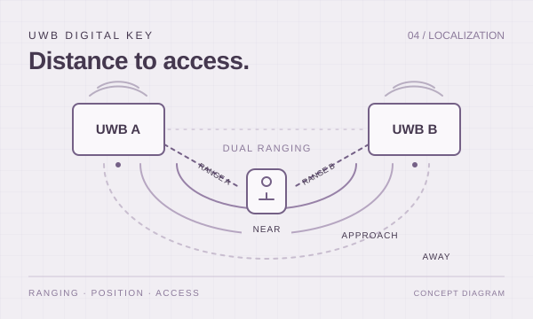

ENGINEERING PROJECT
UWB Digital Key Experiment
School of Transportation and Electrical Engineering
Dalian University of Science and Technology
Method and implementation

Abstract
This project explores an experimental digital key that combines identity and spatial conditions. An authorized key must provide valid positioning information before the lock controller selects a zone-dependent state.
The work covers dual-anchor UWB ranging, measurement filtering, two-circle localization, embedded state logic and a Windows diagnostic interface. This page documents the method and implementation without a quantitative performance claim.
Official competition brief
Problem C of the 2026 TI Cup Liaoning regional contest specifies an experimental wireless digital key with four-bit DIP-switch identity matching and LEDs representing lock/unlock states.
The brief requires communication over at least 3 m. Within the forward ±45° sector, the specified zones are unlock at ≤1 m, welcome at 1–2 m, and sensing beyond 2 m. Its targets are radial error ≤0.3 m, bearing error ≤10°, and zone-boundary error ≤0.2 m.
These values describe competition requirements. They are not measured results or accuracy claims for this implementation.
System architecture
Two UWB anchors provide ranges to the key tag. The controller filters the range sequences and uses the two-circle intersections to obtain a candidate position. It checks geometric validity before calculating radial distance and bearing in the lock coordinate system.
HC-05 communication carries key-ID information. The STM32 lock controller combines ID matching with valid localization, then selects a locked, approach or unlock state. An OLED, indicators and a buzzer provide local feedback.
My contribution
I developed and integrated the embedded hardware and software, debugged the ranging and zone-control logic, and used AI assistance to build a Windows diagnostic application.
The desktop tool supports serial communication and inspection of raw and filtered distances, anchor coordinates and localization results. It serves as a development and tuning interface.
Implementation approach
Each range sequence uses a one-dimensional Kalman filter to balance response and noise reduction. The positioning stage checks whether the two measured circles admit a usable solution. Invalid measurements, geometry or identity prevent an unlock decision.
Separating identity checks, measurement filtering, geometry and zone decisions makes the state transitions easier to inspect. The diagnostic interface helps compare raw and filtered values during parameter adjustment.
Scope and limitations
No prototype photographs or raw measurement dataset accompany this presentation. The project is therefore presented through its architecture and implementation, without distance- or angle-accuracy figures.
Two-anchor localization can produce ambiguous solutions and depends on baseline calibration. Multipath, obstruction and non-line-of-sight propagation require separate testing. Key-ID matching in this experiment is not a claim of production-grade access security.